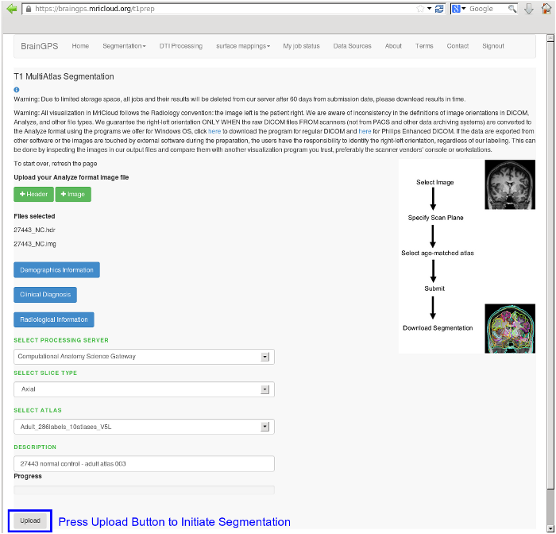

| Press the Upload button to initiate processing |  |
| Test Number | 1 | 2 | 3 | 4 | 5 | 6 | 7 | 8 | 9 | 10 | 11 | 12 | 13 | 14 |
| Test Date | 11/03/2015 | 11/04/2015 | 11/04/2015 | 11/05/2015 | 11/05/2015 | 11/06/2015 | 11/07/2015 | 11/10/2015 | 11/12/2015 | 11/12/2015 | 11/13/2015 | 11/14/2015 | 11/17/2015 | 11/18/2015 |
| Throughput Jobs/Hour | 2 | 5 | 2.2 | 2.2 | 5 | 2.2 | 1.7 | 8 | 8 | 6 | 9 | 11 | 11 | 16 |